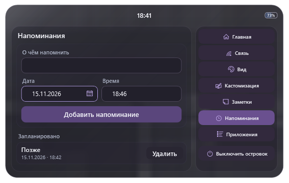
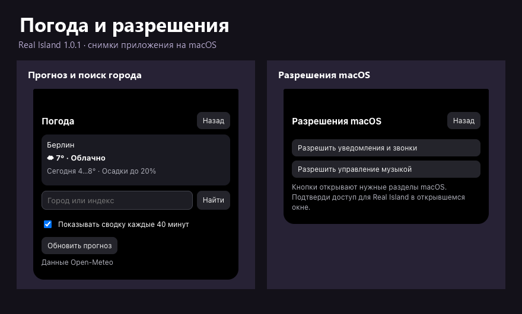

Windows 10 / 11 · Версия 2.3.43
Всё под рукой.
В одном островке.
Музыка, уведомления, заметки, напоминания и быстрые настройки в стеклянной панели.
Ночной эфир
Real.Island
Главная
☁ Облачно · 5°
Кастомизация
Заметки
Нажми на островок, чтобы свернуть его, или открой настройки. Это демо интерфейса без звука.
Напоминания
Запиши задачу и выбери время. Список показывает, что запланировано, а в назначенный момент островок выводит карточку с текстом.

Apple Silicon · macOS 13 и новее
Real Island для Mac
Островок для Apple Music, Spotify и SoundCloud в браузере. Нажми на часы, чтобы свернуть плеер. В настройках есть карточки уведомлений и входящих звонков, цвет полосок, ширина выреза и автозапуск.
В версии 1.0.1 появилась вкладка «Погода». Выбери город в островке, чтобы видеть прогноз и получать сводку каждые 40 минут. Кнопки в разделе «Разрешения macOS» открывают настройки доступа для уведомлений, звонков и управления музыкой.
Скачать Real Island 1.0.1 для MacZIP с готовым приложением. Сборка для тестирования без нотарификации Apple. macOS может заблокировать запуск после скачивания.

Что изменилось в Windows
- Новый вид напоминаний
Тёмная форма с календарём и отдельные карточки для запланированных напоминаний.
- Автозапуск и закрытие панели
Переключатель «Оставить островок навсегда» доступен на вкладке «Главная». Alt+F4 сворачивает открытую панель, а установленное приложение получает ярлык с иконкой в меню «Пуск».
- Таймер личного звонка Discord
Островок распознаёт подключённый личный звонок по кнопкам управления звонком в Discord.
- Смена языка
При быстрой смене раскладки островок обновляет метку без наложения часов. Перед возвращением часов метка плавно уходит вверх.
- Таймер разговора
После подключения островок показывает «В звонке» и длительность разговора. При входящем звонке появляется карточка с вибрирующей зелёной трубкой.
- Исправление для игр
Убрана чёрная пунктирная рамка вокруг верхней строки островка.
- Уведомления мессенджеров
На вкладке «Главная» нажми «Разрешить уведомления». Подтверди запрос Windows, если он появится. Островок покажет уведомления, которые мессенджеры передают Windows.
- Ответ с островка
Набери ответ и нажми «Отправить». Быстрый ответ проверен в Telegram и WhatsApp для уведомлений с полем ответа Windows. Кнопка «Отменить» закрывает черновик и возвращает карточку сообщения.
- Прогноз каждые 40 минут
Островок показывает прогноз со значком солнца, облаков, дождя, снега или ветра.
- Звонки и музыка
Входящий звонок получает приоритет над обычными уведомлениями. Полоски баса остаются видимыми во время разговора.
- Кастомизация
Настройки разделены на карточки. Можно выбрать цвет и прозрачность часов, а также цвет полосок музыки.
- Стекло и быстрые настройки
Контур реагирует на курсор, а часы остаются чёткими при быстрых нажатиях.
Установка на Windows
- Скачай и открой Real.Island.exe
Нажми «Запустить», чтобы попробовать островок.
- Оставь островок с собой
Нажми «Установить», чтобы он появлялся при входе в Windows.
- Настрой под себя
Открой островок и выбери цвет, прозрачность и скорость анимации. Удалить приложение можно в параметрах Windows.